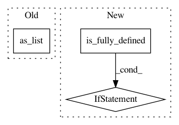

e164c3574da160fb72fc962947a783fa299424e3,sonnet/src/batch_apply.py,,merge_leading_dims,#Any#Any#,97
Before Change
if len(x.shape) < num_dims:
return x
return tf.reshape(x, [-1] + x.shape.as_list()[num_dims:])
After Change
return x
static_shape = [maybe_prod(x.shape[:num_dims])] + x.shape[num_dims:]
if static_shape.is_fully_defined(): // pytype: disable=attribute-error
return tf.reshape(x, static_shape)
// Shape can"t be inferred statically.
tensor_shape = tf.shape(x)
leading_dim = tf.reduce_prod(tensor_shape[:num_dims], keepdims=True)
other_dims = tensor_shape[num_dims:]
dynamic_shape = tf.concat([leading_dim, other_dims], axis=0)
In pattern: SUPERPATTERN
Frequency: 3
Non-data size: 3
Instances
Project Name: deepmind/sonnet
Commit Name: e164c3574da160fb72fc962947a783fa299424e3
Time: 2019-07-07
Author: tomhennigan@google.com
File Name: sonnet/src/batch_apply.py
Class Name:
Method Name: merge_leading_dims
Project Name: onnx/onnx-tensorflow
Commit Name: c4fc047e7ec71daa6aa8f71e9cc2ee9e5a3768b6
Time: 2020-04-14
Author: sdmonov@us.ibm.com
File Name: onnx_tf/handlers/backend/split.py
Class Name: Split
Method Name: _common
Project Name: NifTK/NiftyNet
Commit Name: 17a4601ee5ac1a62f46c586d722c6bb4dc254134
Time: 2017-11-01
Author: wenqi.li@ucl.ac.uk
File Name: niftynet/layer/resampler.py
Class Name: ResamplerLayer
Method Name: _resample_nearest